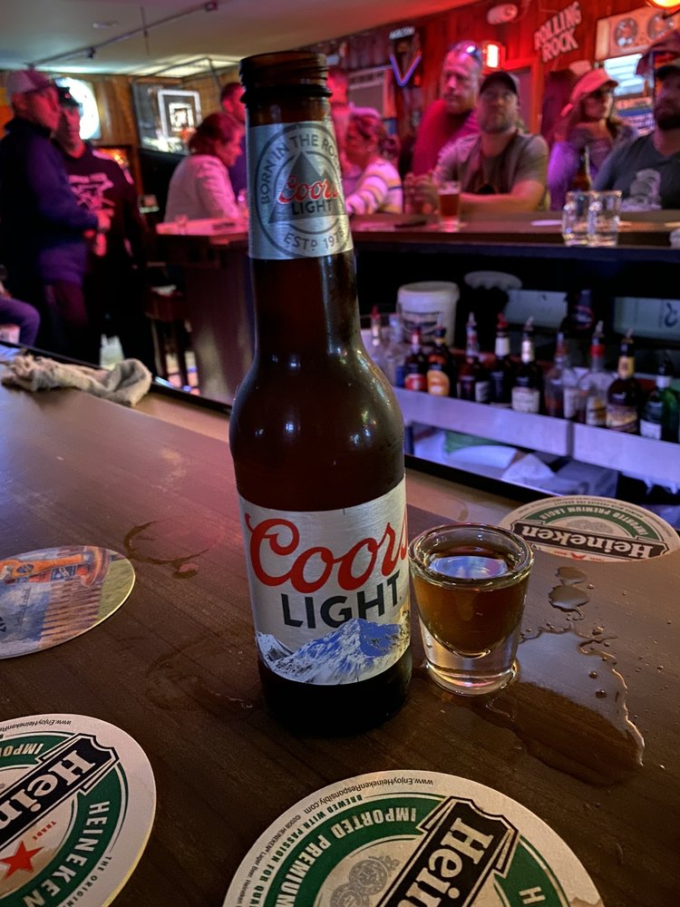

Hudson House Bar sits unassumingly among a row of houses on East 13th Street in Beach Haven — the kind of place you'd walk right past if you didn't already know it was there. Locals call it "The Hud." It's one of the oldest buildings on Long Beach Island, and some longtime accounts of the building describe roots going back to the Prohibition era — a detail that's part of local lore more than a documented fact, but it fits the place: unmarked, no-frills, and built for people who already know where they're going.
Inside, the walls are covered floor to ceiling in old beer signs and shore memorabilia. There's a vintage-style shuffleboard table, a pool table, dartboards, a jukebox, and a scatter of arcade games — the full lineup of a proper dive bar. The crowd is mostly local and unbothered by tourists, but nobody's unwelcome. It's cash only, there's no kitchen, and that's exactly the point.
Hudson House has been named New Jersey's Best Dive Bar more than once, with write-ups from Chowhound and Tasting Table praising its old-school charm, jukebox, and totally unpretentious local vibe. It doesn't run a website, doesn't take reservations, and doesn't really need to — word of mouth and eighty-some Yelp reviews have done the job for decades.
This site imagines a simple online front door for a bar that has never needed one — just the basics (where it is, when it's open, and what's pouring) presented the way a bar this good deserves.

At the bar — a real photo from Hudson House's own Yelp business listing.